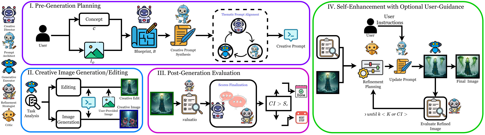
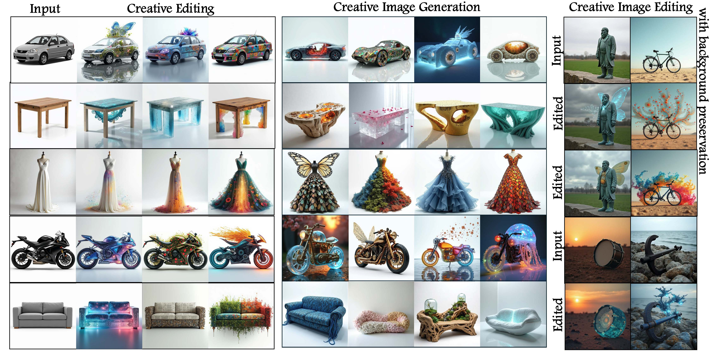
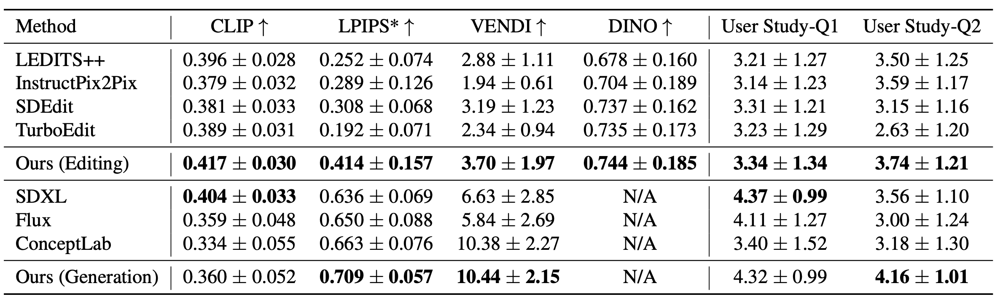
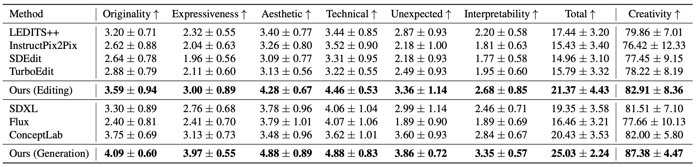

Abstract
Creativity in AI-generated imagery remains a fundamental challenge, requiring not only the generation of visually compelling content but also the capacity to add novel, expressive, and artistically rich transformations to images. Unlike conventional editing tasks that rely on direct prompt-based modifications, creative image editing demands an autonomous, iterative approach that balances originality, coherence, and artistic intent. To address this, we introduce CREA, a novel multi-agent collaborative framework that mimics human creative process. Our framework leverages a team of specialized AI agents who dynamically collaborate to conceptualize, generate, critique, and enhance images. Through extensive qualitative and quantitative evaluations, we demonstrate that CREA significantly outperforms state-of-the-art methods in diversity, semantic alignment, and creative transformation. By structuring creativity as a dynamic, agentic process, CREA redefines the intersection of AI and art, paving the way for autonomous AI-driven artistic exploration, generative design, and human-AI co-creation. To the best of our knowledge, CREA is the first work to introduce a disentangled approach the first to employ an agentic framework for editing tasks.
Method

Qualitative Results

Qualitative Results for Creative Image Editing and Generation Tasks. Qualitative results illustrating CREA’s disentangled creative edits and generation across diverse objects and domains, demonstrating its ability to produce a wide range of creative variations. For more results, please checkout our paper's Supplementary Material.
Qualitative Comparison
Quantitative Results
We conduct a comprehensive evaluation of 'Context Canvas' in two stages, assessing both its foundational RAG component and image generation. We benchmark our approach against SOTA T2I models-such as Flux, SDXL, and DALL-E 3 across image generation and two rounds of self-correction.
RAG Evaluation
We evaluate the foundational RAG system used in our method for both retrieval and generation using GEval. Our RAG process achieves high evaluation scores across both retrieval and generation due to meticulous data curation, retrieval, and prompt engineering.

Comparison with SOTA T2I Models
Traditional metrics like CLIP Score and FID, while effective for general image-text alignment and quality, fail to capture the cultural specificity, narrative depth, and relational accuracy crucial for domain-specific tasks. To address these limitations, we utilize the LLM-as-a-Judge framework, by defining metrics such as Attribute Accuracy, Context Relevance, Visual Fidelity, and Intent Representation. We implement the metrics using DeepEval library. These metrics assess nuanced attributes like character-specific elements, situational alignment, and the overall essence of the generated imagery.

BibTeX
@misc{venkatesh2024crea,
title={CREA: A Collaborative Multi-Agent Framework for Creative Image Editing and Generation,
author={Kavana Venkatesh and Connor Dunlop and Pinar Yanardag},
year={2024},
eprint={2412.09614},
archivePrefix={arXiv},
primaryClass={cs.CV},
url={https://arxiv.org/abs/2412.09614}
}